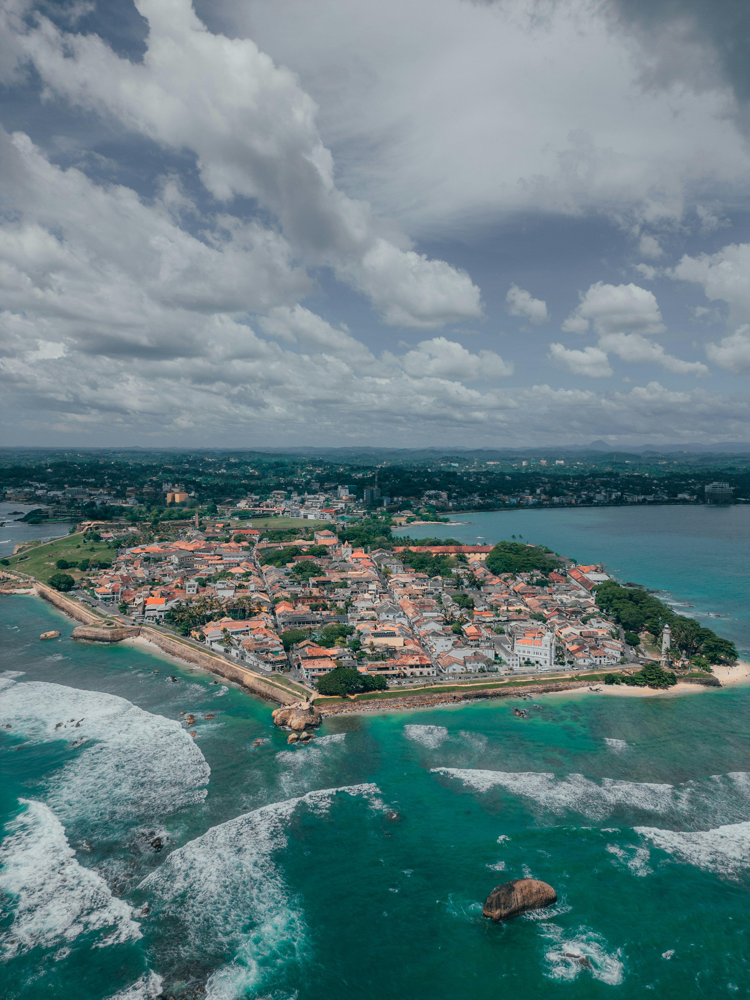

Heritage
HeritageGalle Fort
Explore historic ramparts, lighthouse views, small galleries and charming lanes inside this UNESCO-listed old town.
Wander old fort streets, discover palm-fringed beaches, find a stay you’ll love, and taste your way around the south coast.

From heritage walks to quiet coves, choose the experiences that feel like your kind of trip.
HeritageExplore historic ramparts, lighthouse views, small galleries and charming lanes inside this UNESCO-listed old town.
 Beach
BeachA lively crescent-shaped bay for a swim, beachside cafés and a relaxed afternoon by the water.
 Nature & views
Nature & viewsA small green-fringed cove reached by a walk. Check sea conditions and wear shoes for the uneven path.
 Culture & views
Culture & viewsA peaceful hilltop shrine with ocean views. Dress respectfully and follow the temple’s visitor etiquette.
 History
HistoryLearn about the region’s maritime history and seafaring heritage. Confirm current opening hours before visiting.
 Sunset
SunsetTake an easy stroll along the sea wall as the light changes over the Indian Ocean.
Choose a heritage hideaway inside the Fort or a coastal base close to the beaches.
 Boutique heritage
Boutique heritageA restored heritage mansion in the heart of the Fort, ideal for travelers who want to stay close to historic streets.
 Heritage boutique
Heritage boutiqueA characterful heritage property with courtyard spaces, close to Fort cafés, shops and landmarks.
 Oceanfront
OceanfrontA coastal resort known for its ocean-facing setting, a good option for a resort-style stay.
Accommodation rates and availability change by date and room type. Use the links to confirm current prices, facilities and booking terms.
Find a local meal, a relaxed café or a special dinner during your Galle visit.
 Sri Lankan
Sri LankanA local-food option inside the Fort for travelers looking for Sri Lankan flavors.
 Café & bistro
Café & bistroA stylish dining option at The Fort Printers, with local and international-inspired dishes.
 Special occasion
Special occasionBrowse current restaurants around the Fort and choose based on today’s menu, budget and reviews.
Restaurant details and opening hours can change. Check directly before traveling, especially on public holidays.
Add places, a hotel and restaurants from the cards above. Then create a simple itinerary you can copy or save as a text file.
Choose places ↑A personal shortlist saved in this page while you use it.
Make your trip smoother with a little planning.
Galle Fort is best enjoyed slowly. Wear comfortable shoes for the ramparts and uneven streets.
Coastal conditions change. Check local forecasts and swim only where conditions are suitable.
Use the map links to check routes, opening hours, current reviews and booking availability.
*Travel times are rough estimates and depend on traffic and your starting point. Ratings are indicative snapshots, not live data. This demo does not make hotel or restaurant reservations.